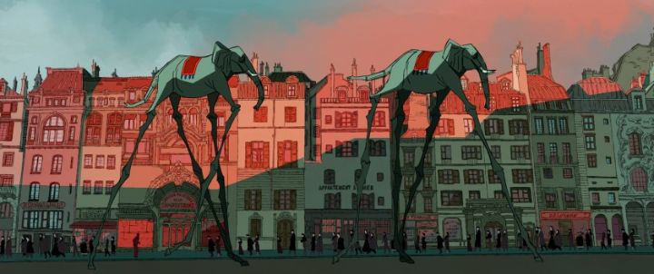

It's hard to give a brief synopsis of the 2018 Spanish film "Bunuel in the Labyrinth of the Turtles." And it's poster art, a closeup of a middle-aged man's skeptical look, with another shot of Salvidor Dali's elephants with long skinny legs, doesn't offer much answers, or much incentive to watch. The film is actually a biographical film about the famous Spanish cinematographer Luis Bunuel, based on a graphic novel of the same name (also co-written by the film's director, Salvador Simo). Specifically, it is about Bunuel making his controversal documentary about the poverty-striken town of Las Hurdes. Despite being a fan of film, I'm not educated enough in the field, and have absolutely no idea who Bunuel is or of this documentary, released as "Land Without Bread." Therefore, despite some minor attention during awards-season, I had even less reason to watch the movie. If it wasn't animated, I probably wouldn't bother (a personal point of narrow ignorance that had allowed me to discover many great films and ignore many others).Instead, treat the movie as a character study of a controversal filmmaker, and the story becomes much more interesting. The opening scene is of a group of artists in a cafe, arguing what the point of "art" is and why they make it, all in the wake of the Surrealists' movement. Luis Bunuel is a filmmaker, and a controversal one: we see him observing the reaction at the premiere of "L'Age d'Or," showing shocking images regarding religion and sexuality that prompts most of the audience to destroy the projector screen (as Bunuel walks out, a handful of viewers praise the work). Due to the nature of his "art," it becomes difficult for him to secure funding for a second film, but fortune comes when a close friend, sculptor Roman Acin, wins a lottery ticket and uses the winnings to fund Bunuel's next project. What would the surrealist filmmaker make next? A documentary: having heard about the poverty of the Spanish town of Las Hurdes, he decides it would be the perfect subject, and an important one to rally other towns and countries to provide aid.It's important to note that in reality, "Land Without Bread" has been debated as an exagerrated and inacurrate portrait of the subject. To show both sides, GKIDS wisely includes a feature-length documentary that debates those inaccuracies on the Bluray of "Labyrinth of the Turtles." It's impossible to know exactly what the town was like, nearly 100 years ago when it was shot. Regardless, this film portrays a small town with a lack of food and medicine, but also shows that the documentary director purposely staged certain scenes to make a dramatic point. One example is when Bunuel hears stories of goats climbing up steep rock sides, only to suddenly fall to their deaths after being trapped and confused, or due to exhaustion, or perhaps malnutrition. After observing a few goats on a rock face and waiting patiently for them to fall, he gives in a shoots two of them and films the result, falsely pretending it was natural. The film also shows Bunuel giving the goat corpses to the townspeople for food (the real documentary claims the bodies were too beat up to be of any value, and that the people regularly farmed and ate goat meat without relying on the myth of them falling to their deaths). This occurs a few times. We see Bunuel buying roosters, goats and donkeys to play out a myth or otherwise rare incident, in order to capture it on film. It'd be horrible to think of these examples of animal cruelty, even if just in animation... but "Labyrinth of the Turtles" cuts to real footage from the original documentary that shows it really happened. Bunuel is a flawed character, often fighting with his producer for spending too much money, or with his writer and cameraman when he does too far to get a certain shot. All the while, it isn't clear WHY he's going so far: he has no personal ties to the town, and despite claiming that the film will help them, it isn't clear how, especially with his unorthadox artistic choices. Hate him or respect him, Bunuel is understandably flawed, but interesting. A son to a wealthy filmmaker father, visions haunt him of a figure that never gave him praise for his interest in movies. In "Labything of the Turtles," there are a few references to his friend Salvidor Dali, the famous painter, but ultimately the film has nothing to do with him: to quote Bunuel in one early outburst, "it's all me!" It's fascinating to watch an artist in the middle of a large project, dealing with his own internal demons and external expectations and mischaracterizations of him. And whenever an artist makes anything, their vanity always gets in the way in one form or another: this story is a great example of that.It's a shame the producer in the film, Ramon Acin, wasn't given more attention. At the risk of a spoiler, it's revealed by the end that he was killed for his political views during the Spanish Civil War, and Bunuel was forced to remove his name from the credits of their documentary before its release. It's a sudden development, told through text in the final minute, and we see Bunuel's somber handling of it, a fitting way to end his particular tale. But the movie never really showed exactly what Ramon did for a living, either through his art or his politics, so it feels sudden and out of place, possibly worthy of its own movie to tell another story.Anyhow, I respect that "Bunuel in the Labyrinth of the Turtles" is well-written, with both moments of drama and lightening humor, and a good, cinematic direction. The production values are mixed: characters are relatively well designed, and color is used well (a few shots a great examples of color theory), as well as a few subtle indications for when we are watching a dream versus a real moment. But the animation is quite poor, at a low framerate, as if it was a good animatic, halfway to a finished movie, before the direcotr gave up or ran out of money. Music and acting are both a bit better though, on par with the sharp script.2019 was a strange year for GKIDS: they had some strong anime licenses, but few other candidates, and left with very few awards nominations for the first time in years. "Bunuel in the Labyrinth of the Turtles" was one of their better licenses for that year, but despite strong writing and direction, you'll have to look past a despicable main character and weak production values. At least now I know who the world-famous Luis Bunuel is, if only for a flawed, staged documentary.
- "Ani" More reviews can be found at : https://2danicritic.github.io/ Previous review: review_Btooom! Next review: review_Burn_the_Witch